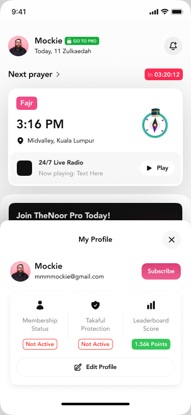
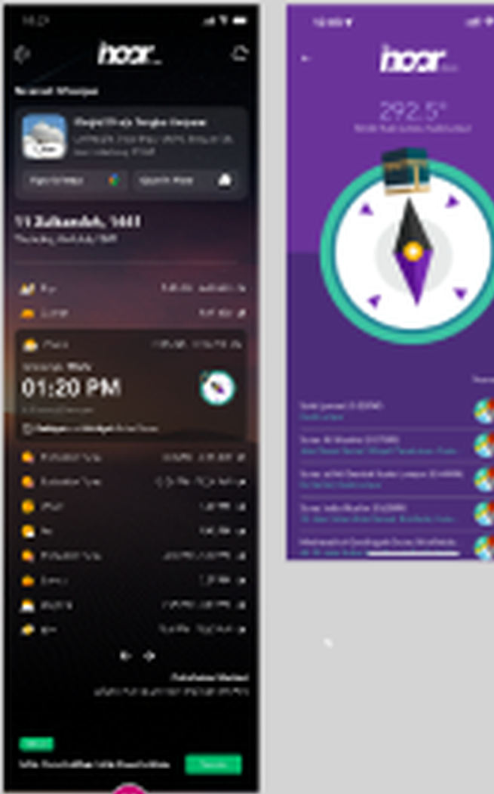
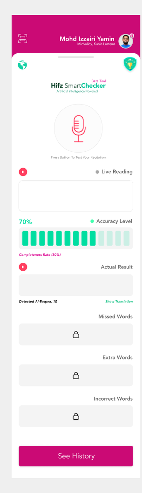
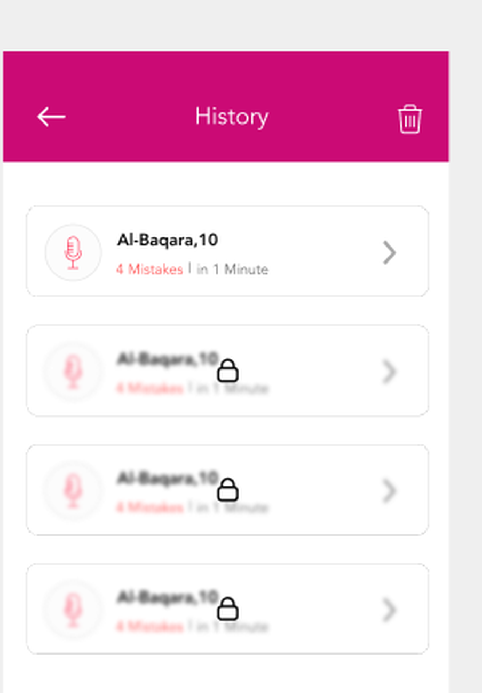
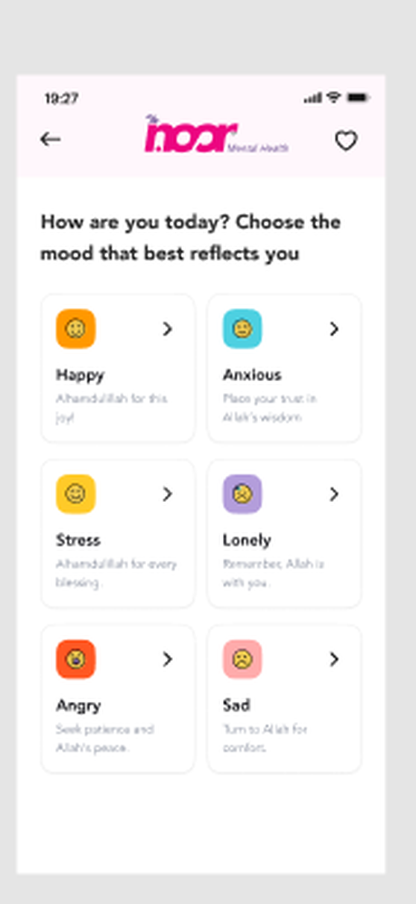
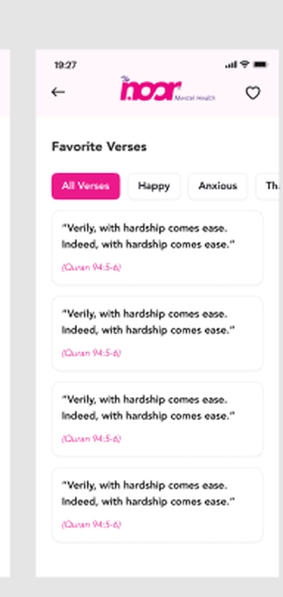
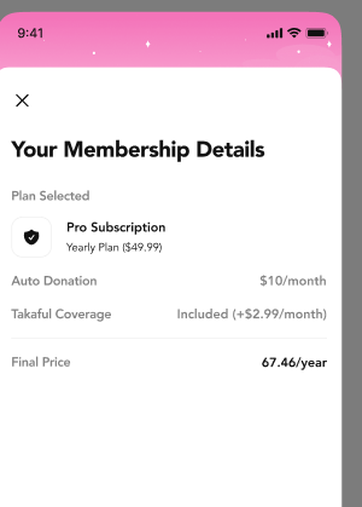

An all-in-one Islamic lifestyle app bundling prayer times and Qiblah direction, Qur'an reading, an AI-assisted memorization checker, and mood-based wellness, with a membership tier that layers in auto-donation, Takaful insurance, and marketplace perks.
Most Muslim lifestyle apps pick a lane: a prayer utility, or a Qur'an reader, or a donation platform. TheNoor tried to be a daily home screen habit instead, prayer tracking, Qur'an practice, emotional wellbeing, and a paid membership tier all living in one product, without any single feature getting lost among the others.
From the home dashboard through to the paid membership tier, every feature reuses the same cards, colour system, and pink-accented dark mode, so a user moving between prayer tools and the Qur'an reader never feels like they've left the app.
The home screen leads with a live countdown to the next prayer, then layers in a 24/7 live radio player, a daily prayer tracker, a sadaqah donation card, and a rotating hadith card, so there's always a reason to open the app beyond checking the time.

Beyond the day's five prayers, a dedicated timetable scrolls through the full month at a glance. A separate Qiblah compass gives an exact bearing to Mecca along with nearby mosques, for the moments a countdown alone isn't enough.

Every ayah pairs the Arabic text with an English translation and a reciter's audio track. A tajweed mode color-codes each articulation rule directly over the script, turning a feature usually buried in settings into something visible on the very first read.
Hifz SmartChecker listens to a live recitation, detects which surah and ayah is being read, and scores accuracy and completeness against the source text, flagging missed, extra, or incorrect words. Every attempt is saved to a history log, so improvement is something a user can actually see over time, not just feel.


A simple daily prompt, how are you feeling, happy, anxious, stressed, lonely, angry, or sad, surfaces a matched verse for comfort rather than a generic affirmation. Verses can be saved to a personal favorites list, filterable by the mood that led there.


NoorPro isn't just an unlock switch for premium screens. Monthly or annual plans fold in add-ons most apps would treat as separate products entirely: auto-donation, Takaful insurance coverage, and merchant perks across the NoorCommerce marketplace, all priced and itemized before checkout so the final total is never a surprise.

TheNoor's hardest design problem was never any single screen, it was making prayer tools, Qur'an practice, mental wellbeing, and a paid membership feel like one coherent habit instead of five bolted-together features. Keeping every area on the same visual language, and giving each one its own clear reason to open the app that day, was what held it together.